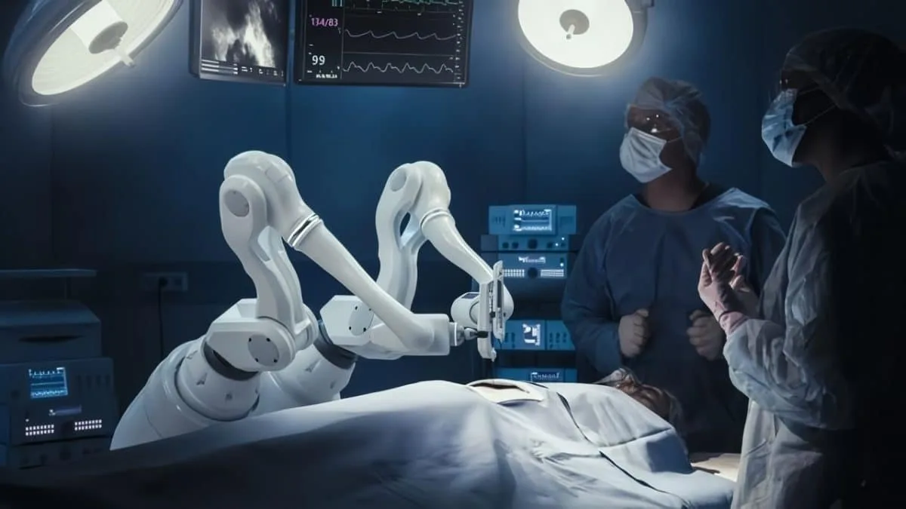

Роботы-хирурги и бионические протезы
Точность, которой не достичь руке человека

Как роботы помогают хирургам?
Хирургические роботы не действуют автономно — они усиливают возможности врача. Хирург сидит за консолью и управляет манипуляторами, которые повторяют движения его рук, но с точностью до долей миллиметра. Система фильтрует тремор, увеличивает изображение в 10-15 раз и позволяет работать через крошечные разрезы. Результат — меньше боли, меньше шрамов, быстрое восстановление.
🤖 Основные хирургические роботы в мире
| Робот | Страна | Число операций (2025) | Основное применение |
|---|---|---|---|
| da Vinci | США | 1,5 млн | Урология, гинекология, абдоминальная хирургия |
| Versius | Великобритания | 25 000 | Малоинвазивная хирургия, компактный и мобильный |
| Mako (Stryker) | США | 80 000 | Эндопротезирование коленных и тазобедренных суставов |
| CyberKnife | США | 50 000 | Радиохирургия — лечение опухолей без разрезов |
🏥 Сравнение: обычная операция vs операция с роботом da Vinci
| Параметр | Обычная операция | С роботом da Vinci |
|---|---|---|
| Разрез | 10-20 см | 1-2 см (несколько проколов) |
| Кровопотеря | 300-500 мл | 50-100 мл |
| Длительность госпитализации | 7-10 дней | 2-4 дня |
| Реабилитация | 4-6 недель | 1-2 недели |
| Точность движений | зависит от хирурга | до 0,1 мм, фильтрация тремора |
🦾 Бионические протезы с ИИ
| Название протеза | Разработчик | Принцип управления | Что умеет |
|---|---|---|---|
| LUKE Arm | DARPA / Mobius Bionics | Сигналы мышц предплечья | Индивидуальное управление каждым пальцем, захват хрупких предметов |
| BeBionic | Ottobock | Миоэлектрические датчики | 14 хватов, сила до 45 кг |
| Hero Arm | Open Bionics | Миоэлектрика + ИИ-адаптация | 3D-печатный, лёгкий, дешёвый (для детей и взрослых) |
Современные нейропротезы учатся «на лету»: запоминают, как пользователь пытается двигать пальцами, и со временем становятся точнее. Это называют «машинным обучением в реальном времени» — ИИ адаптируется к индивидуальной физиологии человека.